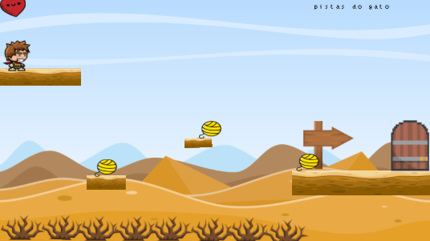
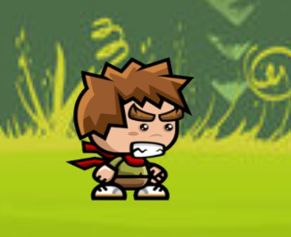
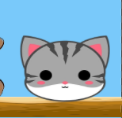
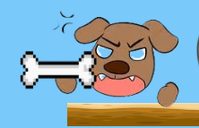

sobre o jogo
Em "Mingau, Cadê Você?", o jogador busca encontrar seu gato desaparecido, enfrentando desafios e seguindo pistas em um mundo divertido e cheio de mistérios. se quiser saber mais sobre a história clique no botão abaixo:
saiba maisgaleria de fotos



